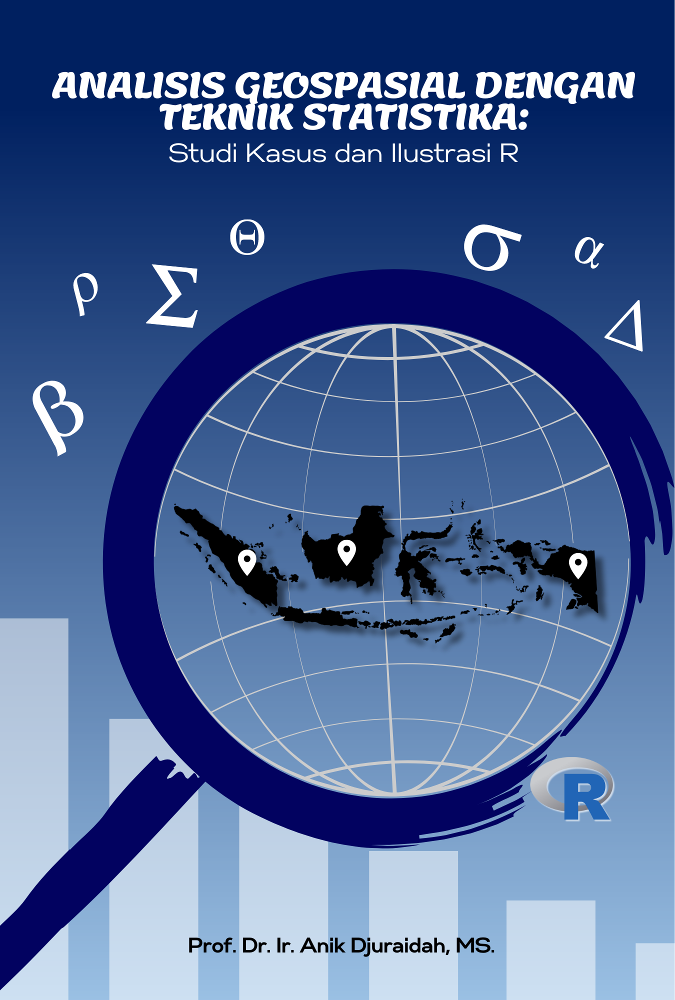

Pemodelan Statistika pada Data Geospasial
Studi Kasus dan Ilustrasi dengan R
Kata Pengantar
Statistika adalah seni dan ilmu merancang suatu penelitian dan menganalisis data yang dihasilkan dari penelitian tersebut. Tujuan utamanya adalah menerjemahkan data menjadi pengetahuan dan pemahaman tentang dunia sekitar. Singkatnya, statistika adalah seni dan ilmu tentang belajar dari data (Agresti et al., 2018). Data merupakan elemen penting dalam statistika yang dikumpulkan melalui berbagai metode seperti survei, percobaan, observasi, administratif, terekam secara otomatis, dan lain-lain.
Data geospasial menggabungkan informasi lokasi (koordinat di bumi), informasi atribut (karakteristik dari objek, peristiwa, atau fenomena yang diteliti), dan seringkali juga informasi temporal (rentang waktu amatan di lokasi dari atribut tersebut berada) (Stock & Guesgen, 2016). Cabang statistika yang berkaitan dengan analisis dan pemodelan data geospasial dikenal dengan statistika spasial. Perbedaan utama antara statistika spasial dan statistika klasik adalah bahwa data geospasial tidak memenuhi asumsi sebaran bebas stokastik (Gelfand et al., 2010).
Konsep utama dalam statistika spasial adalah autokorelasi spasial yang mengacu pada hukum pertama geografi yang dikemukakan Tobler (1970): “Everything is related to everything else, but near things are more related than distant things”. Autokorelasi spasial berasal dari (a) hubungan faktor-faktor eksogen dan endogen dengan pola spasial yang berbeda, (b) proses spasial yang menyebabkan munculnya interaksi spasial antar observasi, (c) agregasi nilai observasi pada unit spasial yang tidak tepat (Anselin, 1988; Tiefelsdorf, 2000).
Buku ini memberikan penjelasan tentang analisis data geospasial dimulai dari identifikasi, pendugaan, dan interpretasi dari model spasial, serta manarik kesimpulan. Pada buku ini diberikan beberapa ilustrasi dari hasil penelitian mahasiswa S1 dan S2 Departemen Statistika IPB. Pada setiap ilustrasi dilengkapi dengan data, peta, dan syntax R, sehingga memudahkan pembaca memahami dan menerapkan pada data yang akan diteliti.
Buku ini dirancang untuk pembaca dari berbagai latar belakang, baik yang memiliki pengalaman dalam analisis geospasial maupun yang baru mengenalnya. Kami berharap buku ini dapat menjadi sumber pengetahuan yang berharga dan panduan yang berguna bagi pembaca dalam memahami dan menguasai analisis geospasial.
Terima kasih disampaikan kepada Alfa Nugraha Pradana, M.Si., Fadillah Rohimahastuti, M.Si., dan Nindi Pighita, M.Si. yang telah membantu dalam penyusunan dan pemeriksaan script R, serta Prof. Aji Hamim Wigena, M.Sc. dan Rahma Anisa, S.Stat, M.Si., M.Act.Sc. yang telah memberikan review pada buku yang kami susun. Kami juga mengucapkan terima kasih kepada semua pihak yang telah mendukung dan berkontribusi dalam pembuatan buku ini. Buku ini masih jauh dari sempurna, kritik dan saran yang membangun terhadap buku ini sangat diharapkan. Semoga buku ini dapat memberikan manfaat dan meningkatkan pemahaman pembaca tentang analisis data geospasial.
Versi cetak buku ini
